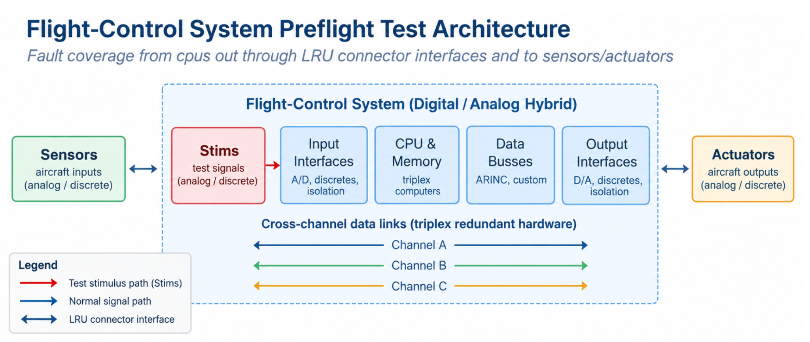

F-CK-1 Flight-Control
Built-In Test Architecture
Developed the architecture and detailed software requirements for the preflight Built-In Test (BIT) of the digital flight-control system. Performed detailed circuit analysis considering component tolerances to detect stuck-at faults in circuit cards and wiring out to aircraft actuators and sensors, and execution faults in CPUs, memories, and data busses. Identified coverage gaps and drove new vendor hardware requirements, evolved the Lockheed BIT interpreter for F-CK-1 needs, and created a software model of the Analog Independent Backup Unit to accelerate test-case development. Led team of 6 engineers to define all requirements and perform sub-system integration.

2.BIT Functional Architecture
(Procedures)
Generation
& Tolerances
Acquisition
Evaluation
Detection
Report
3.Example: Coverage Gap and Hardware Improvement
Certain input signal paths could not be adequately exercised and observed by the existing BIT stim paths.
- Added stimulus capability for uncovered paths
- Closed critical fault-detection gaps
- Drove new hardware requirements to vendors